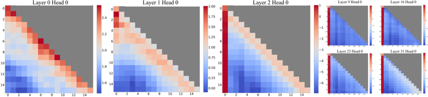
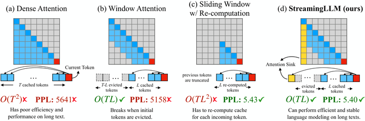

The int8 KV cache
The key-value cache is where an autoregressive model keeps everything it has already read, so that generating token 500 does not require recomputing the first 499. Past a few thousand tokens it is comfortably larger than the model that produced it, and on a machine whose entire heap is one contiguous allocation, its size is a design constraint rather than an implementation detail.
The arithmetic
For Qwen3-0.6B: 2 (keys and values) × 28 layers × 1024 kv-dimensions × 4 bytes comes to 224 KiB per token. At the default 512-token context that is 112 MiB of kernel heap, which is why convert.py prints the figure when the context window is chosen. The window is bounded by cache size and not by the model, and finding that out as an allocation failure at boot is a worse way to learn it.
| Scheme | Per token | At 32,768 tokens |
|---|---|---|
| f32, one allocation | 224 KiB | 7.0 GiB contiguous. Unreachable |
| int8, one allocation | 56 KiB | 1.75 GiB contiguous. Very unlikely |
| int8, split per layer | 56 KiB | 28 × ~66 MiB, achievable |
Splitting per layer is what makes long context reachable at all. As one allocation the cache needs a single unbroken physical region, and the largest contiguous span a real memory map offers is nothing like its total free memory. Split per layer, the largest single request drops 28-fold, and a fragmented map can satisfy 28 requests of 66 MiB when it cannot satisfy one of 1.75 GiB.
Quantisation, and an asymmetry
Entries are stored as int8 in blocks of 32, with one f32 scale per block, so the overhead is one scale per 32 values, not one per tensor. Block scaling matters here because attention activations have outliers, and a single scale across a whole tensor spends most of its range representing one large value badly.
The measured error is not symmetric between keys and values: keys carry roughly fifteen times the impact. The reason is structural. A key goes into a dot product whose result then passes through softmax, which is exponential, so a small perturbation in a score becomes a disproportionate change in attention weight — and because softmax normalises, that error redistributes across every other position too. A value is only ever averaged, and averaging is forgiving. If you have quantisation budget to spend unevenly, spend it on the keys.
Attention sinks and a sliding window

Past the allocated window the cache runs as a ring: a handful of initial tokens are pinned in place as attention sinks and everything after them slides. The sinks look like an arbitrary hack and are not. Transformers place a large amount of attention mass on the first few positions regardless of what those tokens actually say — the mechanism appears to be that softmax must sum to one, so a head with nothing it wants to attend to has to put its mass somewhere, and the beginning of the sequence is the one place every query can see.
Evict those positions and every head that was using them as a null option is forced to redistribute onto real tokens it does not want, which degrades output sharply and immediately. Keep four of them pinned and generation continues past the nominal context length instead of falling apart at the boundary. This is the StreamingLLM result, and it costs four cache slots.

Why not simply recompute
The obvious alternative to any of this is to drop the cache and recompute attention over a sliding window each time. That is correct, and it is quadratic in the window length, which turns every token into a prefill. On a machine that is already bandwidth-bound and single-core, the cache is not an optimisation to be traded away — it is what makes generation possible at a usable rate at all.
The int8 encoding and the sink-plus-window scheme are therefore both answers to the same question: how to keep the cache, given that doing without one is not an option.